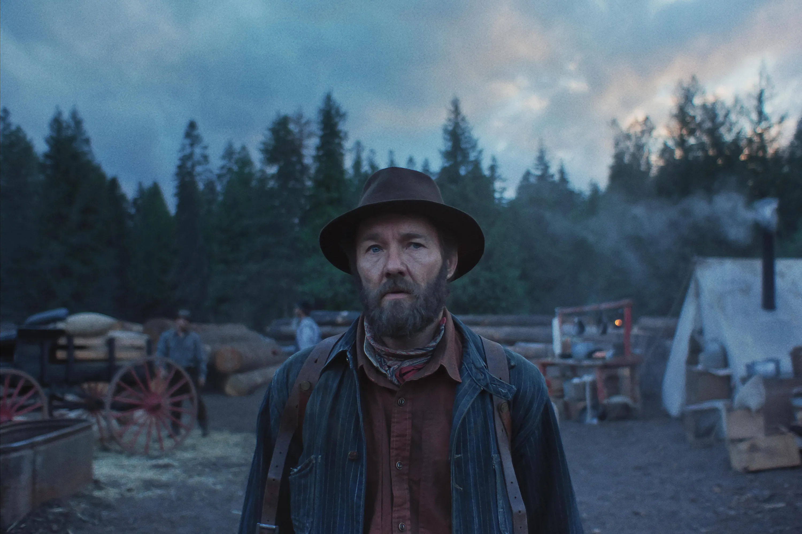

Terror gótico sureño
Los Pecadores
Ryan Coogler mezcla vampiros, crítica social y drama familiar en una propuesta atmosférica y ambiciosa, tan sugerente en lo visual como irregular en su guion.
Leer crítica completaBlog de cine y cultura audiovisual
Archivo de reseñas, estrenos y análisis con una mirada personal sobre cine y cultura audiovisual.
Terror gótico sureño
Ryan Coogler mezcla vampiros, crítica social y drama familiar en una propuesta atmosférica y ambiciosa, tan sugerente en lo visual como irregular en su guion.
Leer crítica completa
Drama intimista
Una película contemplativa y emocional sobre memoria, distancia y silencios. La crítica profundiza en su ritmo pausado y en la fuerza de sus imágenes.
Leer crítica completaFantástico gótico
Una aproximación visualmente ambiciosa al mito de Frankenstein, marcada por la melancolía, el artificio y el gusto por lo monstruoso.
Leer crítica completa